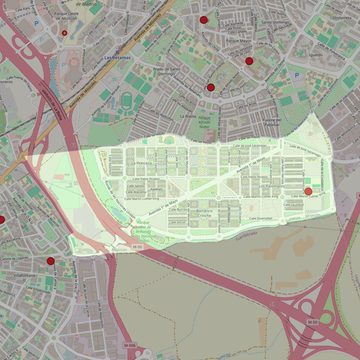

San Juan Pablo II
- Arciprestazgo
- Alcorcón
- Población
- Alcorcón
- Dirección postal
- c/ Mestizaje, s/n
- Código postal
- 28922
- Extensión
- 2,60 km² (260 ha)
- Teléfono
- 624 627 720
- Información demográfica
- De la parroquia · De la población (Alcorcón) · Del arciprestazgo (Alcorcón)


Descargar mapaLímites según decreto
"Partiendo de la glorieta donde confluyen las calles Alfredo Nobel y Las Hayas, arrancan por el eje de las calles Las Hayas e Institutos (en dirección noreste); siguen por el eje de las calles Parque Ferial y Ronda de las Naciones Unidas y por el límite con el término municipal de Alcorcón-Fuenlabrada (en dirección sureste) hasta el límite con el término municipal de Alcorcón-Móstoles; avanzan por los límites de los términos municipales de Alcorcón- Móstoles (en dirección suroeste) hasta el eje de la vía del ferrocarril Madrid-Móstoles (C-5) y continúan por una línea recta imaginaria hasta el inicio de la calle Las Hayas, continuando por su eje (en dirección este) hasta la glorieta donde la calle Las Hayas se encuentra con la calle Alfredo Nobel, punto de partida.
Desarrollos urbanísticos previstos
- Alcorcón: Plan Vive (6 promociones): 822 viviendas ya entregadas
Las cifras y sus fuentes están en la ficha de cada desarrollo, en la sección «Previsión de desarrollos urbanísticos».